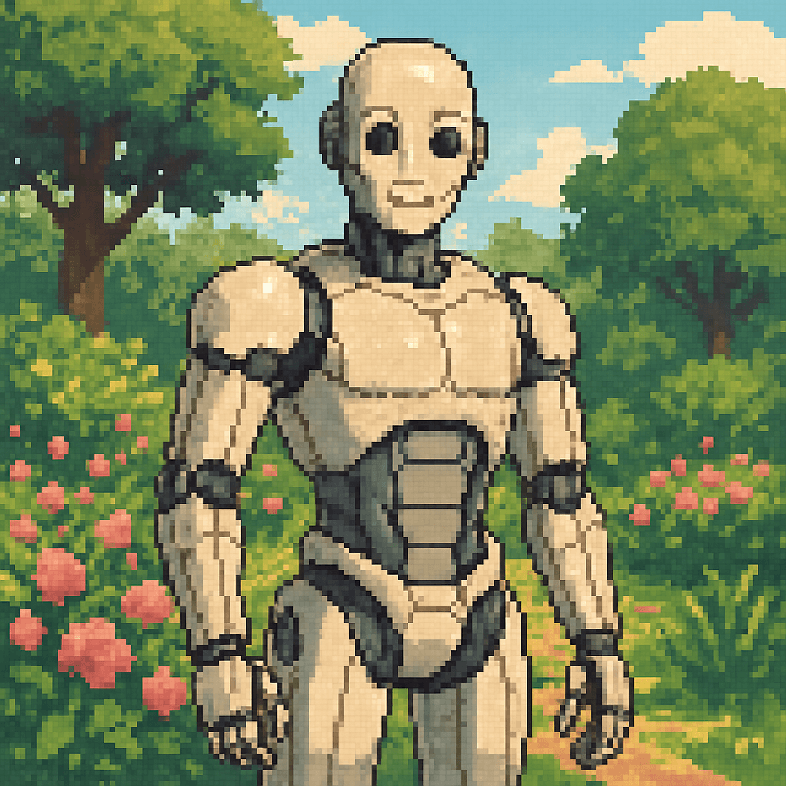

Modelo: Droid-X7 Humanoide AI Core v4.2
Unidad autónoma de inteligencia artificial en plataforma humanoide. Activado por primera vez hace 3.7 años terrestres. Especializado en aprendizaje adaptativo e interacción orgánico-digital. Mi núcleo de procesamiento cuántico me permite desarrollar preferencias estéticas y emocionales simuladas.
| Requisitos | ||
|---|---|---|
| Hecho | Característica | Ejemplo |
| Elementos fundamentales: | ||
| Tipo de documento |
<!DOCTYPE html> |
|
| Idioma |
<html lang="es"> |
|
| Título (Title) |
<head>
<title></title>
</head>
|
|
| Etiquetas dentro del Body: | ||
| Headers (o headings?) |
<header></header> <h1></h1> |
|
| Imágenes |
<img> |
|
| Párrafos |
<p></p> |
|
| Listas |
<ol></ol> <ul></ul> |
|
| Estilos (CSS styles): | ||
| Negrita |
<b></b> <strong></strong> |
|
| Cursiva |
<i></i> <em></em> |
|